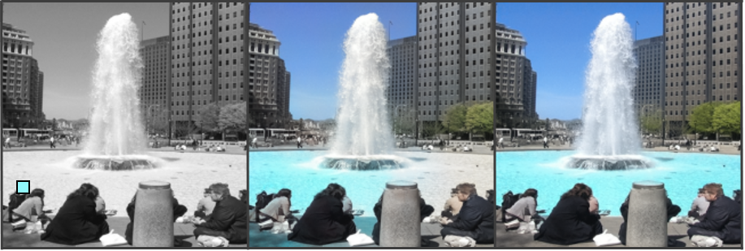
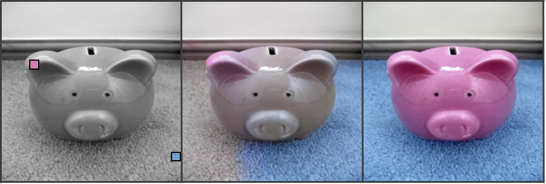
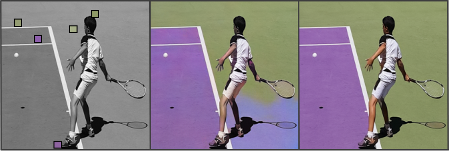
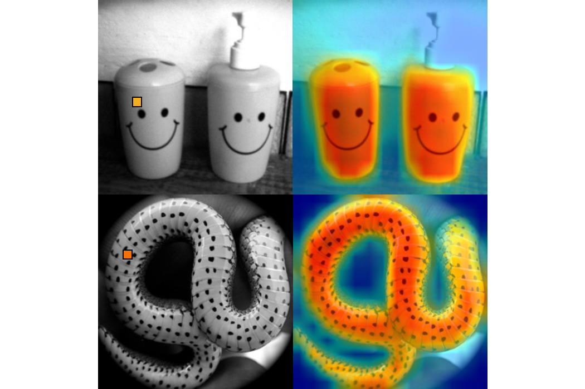
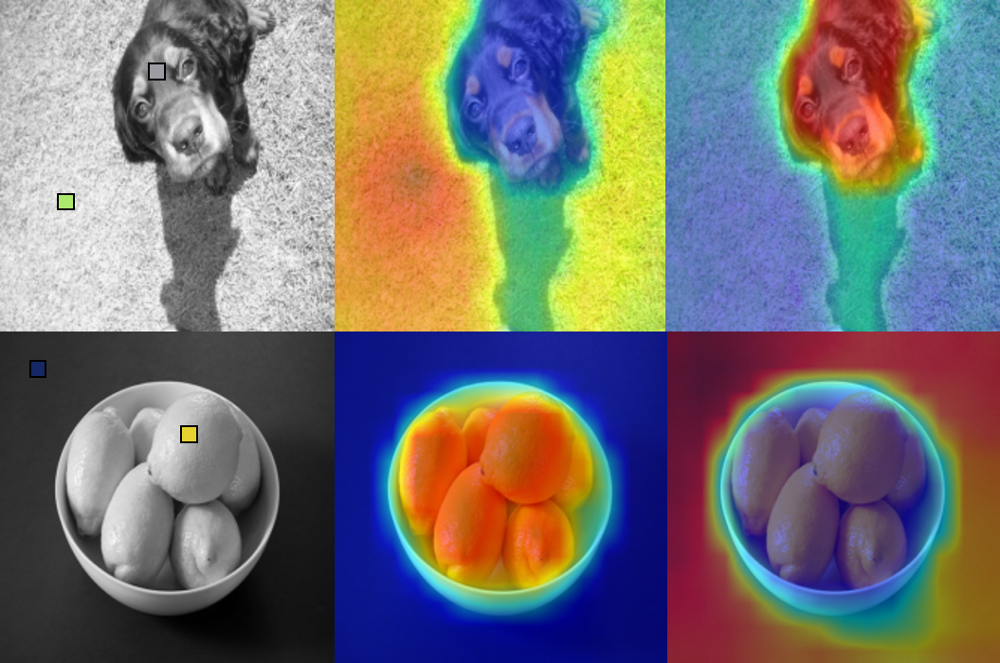

iColoriT: Towards Propagating Local Hint to the Right Region in Interactive Colorization by Leveraging Vision Transformer
WACV 2023

Abstract
Point-interactive image colorization aims to colorize grayscale images when a user provides the colors for specific locations. It is essential for point-interactive colorization methods to appropriately propagate user-provided colors (i.e., user hints) in the entire image to obtain a reasonably colorized image with minimal user effort. However, existing approaches often produce partially colorized results due to the inefficient design of stacking convolutional layers to propagate hints to distant relevant regions. To address this problem, we present iColoriT, a novel point-interactive colorization Vision Transformer capable of propagating user hints to relevant regions, leveraging the global receptive field of Transformers. The self-attention mechanism of Transformers enables iColoriT to selectively colorize relevant regions with only a few local hints. Our approach colorizes images in real-time by utilizing pixel shuffling, an efficient upsampling technique that replaces the decoder architecture. Also, in order to mitigate the artifacts caused by pixel shuffling with large upsampling ratios, we present the local stabilizing layer. Extensive quantitative and qualitative results demonstrate that our approach highly outperforms existing methods for point-interactive colorization, producing accurately colorized images with a user's minimal effort.
Paper

Paper
WACV, 2023.
Sanghyeon Lee, Jooyeol Yun, Minho Park, and Jaegul Choo. "iColoriT: Towards
Propagating Local Hint to the Right Region in Interactive Colorization by Leveraging
Vision Transformer"
Method overview
iColoriT vs. Zhang et al.
- 
- 
- 
Diverse Colorization Results


Rollout
-

Caption
-

Caption
Citation
@article{lee2022icolorit,
title={iColoriT: Towards Propagating Local Hint to the Right Region in Interactive Colorization by Leveraging Vision Transformer},
author={Lee, Sanghyeon and Yun, Jooyeol and Park, Minho},
journal={arXiv preprint arXiv:2207.06831},
year={2022}
}